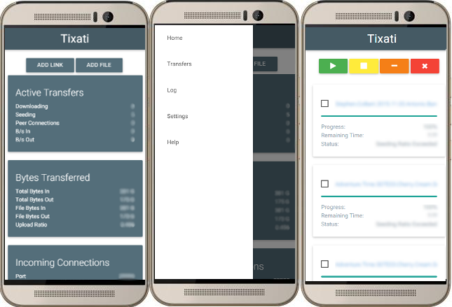

MaterialTix
MaterialTix is a WebUI theme for the Tixati Torrent client
Created with responsive design for both Mobile and Desktop

-
Previous ReleasesInstall Instructions
- Download using using links above
- Extract file to desired location
- In Tixati, click the options button
- Select Web Interface
- Under HTML Templates, click "Select Folder"
- Select the folder you extracted the files to
- Open WebUI in your browser and enjoy
Changelog
- Bug fixes:
- Progress bar on Transfers > Details > Files fixed
- Fixed misalligned Tixati text in top left corner of the page
- Changed Button colours
Version 0.5b
Version 0.5a
- Home page looks cleaner on mobile now. The Add File/Magnet link cards were replaced with buttons
- Log page and file transfer logs now update
Version 0.5
- IT'S ALIVE!!!
- Transfer status on home page now updates
- Progress bars on transfer and File cards
- The progress bars update every 2.5 seconds
- Progress and Status text will also update
Version 0.4
- CARDS!!!
- Replaced table elements in the UI with Cards
- Tabified the Transfer Details page
- Changed the position and look of the Stop/Start/Remove/Delete buttons on the Transfer page and Details page
Version 0.3
- Fixed Add File option on home page
- Added Filter option on Transfers Page (Settings > WebUI Settings)
Version 0.2
- Added priority controls to Transfer pages
- Added Start/Stop/Remove/Delete buttons to Transfer pages
- Cleaned up log pages
- Cleaned up Settings page
- Cleaned up Help Page
- Made the interface more responsive on Mobile devices
Version 0.1
- Initial release